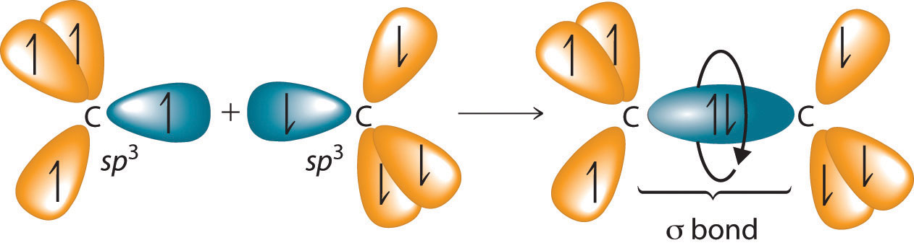
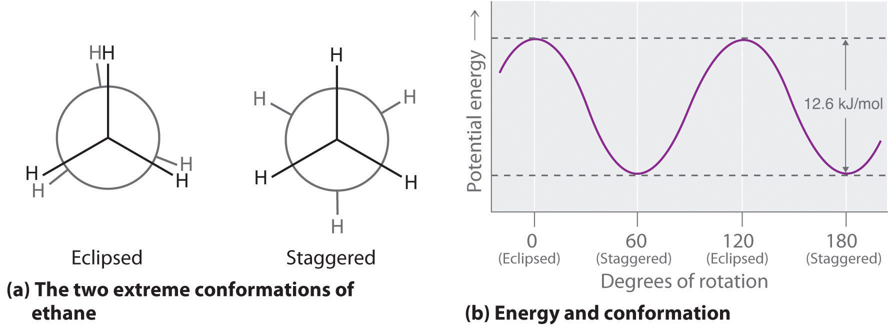
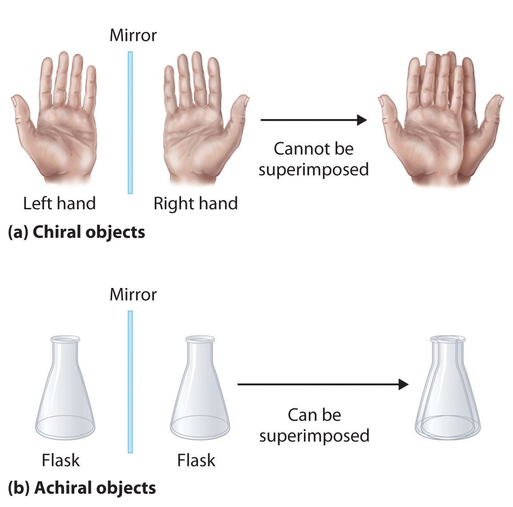
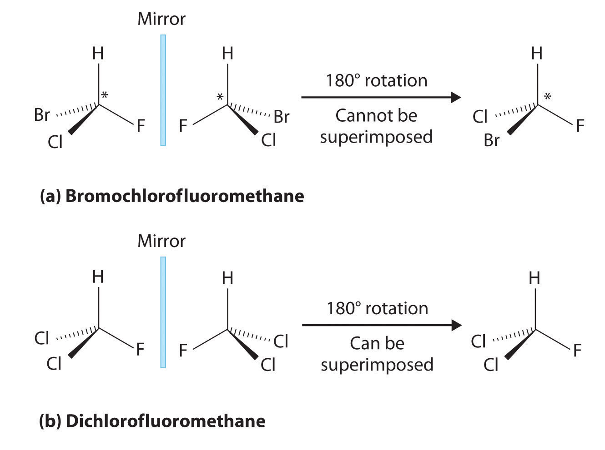
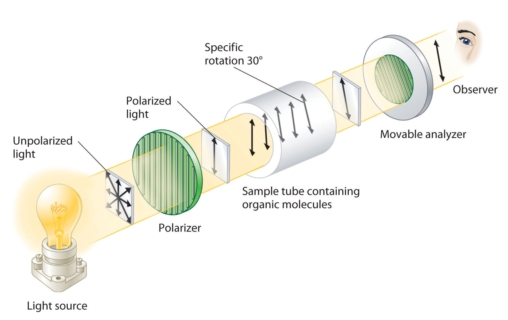
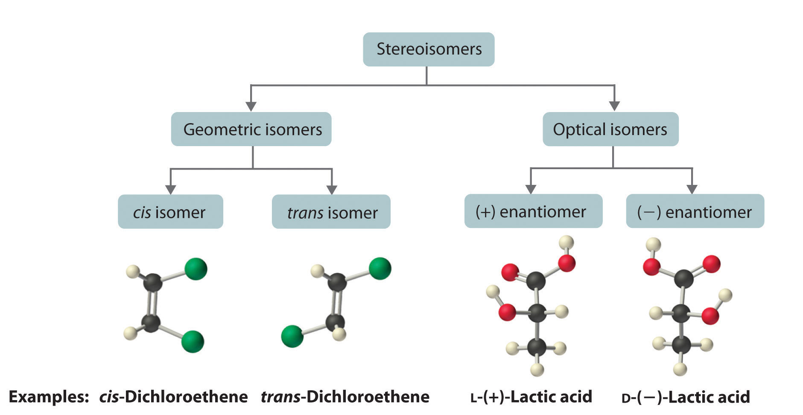

In earlier discussions of organic compounds, we focused on differences in how the functional groups were connected to the carbon framework. Differences in connectivity resulted in different chemical compounds with different names. You learned, for example, that although 1-propanol (n-propanol) and 2-propanol (isopropanol) have the same molecular formula (C3H8O), they have different physical and chemical properties. Just as with metal complexes, compounds that have the same molecular formula but different arrangements of atoms are called isomers. (For more information on metal complexes, see Chapter 23 "The ", Section 23.4 "Coordination Compounds".) In this section, we describe various types of isomers, beginning with those whose three-dimensional structures differ only as the result of rotation about a C–C bond.
The C–C single bonds in ethane, propane, and other alkanes are formed by the overlap of an sp3 hybrid orbital on one carbon atom with an sp3 hybrid orbital on another carbon atom, forming a σ bond (Figure 24.3 "Carbon–Carbon Bonding in Alkanes"). Each sp3 hybrid orbital is cylindrically symmetrical (all cross-sections are circles), resulting in a carbon–carbon single bond that is also cylindrically symmetrical about the C–C axis. Because rotation about the carbon–carbon single bond can occur without changing the overlap of the sp3 hybrid orbitals, there is no significant electronic energy barrier to rotation. Consequently, many different arrangements of the atoms are possible, each corresponding to different degrees of rotation. Differences in three-dimensional structure resulting from rotation about a σ bond are called differences in conformation, and each different arrangement is called a conformational isomer (or conformer)Isomers whose three-dimensional structures differ because of rotation about a σ bond..
Conformational isomers differ in their three-dimensional structure due to rotation about a σ bond.
Figure 24.3 Carbon–Carbon Bonding in Alkanes
Overlapping sp3 hybrid orbitals on adjacent carbon atoms form a cylindrically symmetrical σ bond. Because rotation about the bond does not affect the overlap of the bonding orbitals, there is no electronic energy barrier to rotation.
The simplest alkane to have a conformational isomer is ethane. Differences between the conformations of ethane are depicted especially clearly in drawings called Newman projections, such as those shown in part (a) in Figure 24.4 "Eclipsed and Staggered Conformations of Ethane". In a Newman projection, the ethane molecule is viewed along the C–C axis, with the carbon that is in front shown as a vertex and the carbon that is in back shown as a circle. The three hydrogen atoms nearest the viewer are shown bonded to the front carbon, and the three hydrogen atoms farthest from the viewer are shown bonded to the circle. In one extreme, called the eclipsed conformation, the C–H bonds on adjacent carbon atoms lie in the same plane. In the other extreme, called the staggered conformation, the hydrogen atoms are positioned as far from one another as possible. Rotation about the C–C bond produces an infinite number of conformations between these two extremes, but the staggered conformation is the most stable because it minimizes electrostatic repulsion between the hydrogen atoms on adjacent carbons.
Figure 24.4 Eclipsed and Staggered Conformations of Ethane
(a) In a Newman projection, the molecule is viewed along a C–C axis. The carbon in front is represented as a vertex, whereas the carbon that is bonded to it is represented as a circle. In ethane, the C–H bonds to each carbon are positioned at 120° from each other. In the fully eclipsed conformation, the C–H bonds on adjacent carbon atoms are parallel and lie in the same plane. In the staggered conformation, the hydrogen atoms are positioned as far apart as possible. (b) The eclipsed conformation is 12.6 kJ/mol higher in energy than the staggered conformation because of electrostatic repulsion between the hydrogen atoms. An infinite number of conformations of intermediate energy exist between the two extremes.
In a Newman projection, the angles between adjacent C–H bonds on the same carbon are drawn at 120°, although H–C–H angles in alkanes are actually tetrahedral angles of 109.5°, which for chains of more than three carbon atoms results in a kinked structure. (For more information on bond angles and molecular modeling, see Chapter 2 "Molecules, Ions, and Chemical Formulas", Section 2.1 "Chemical Compounds".) Despite this three-dimensional inaccuracy, Newman projections are useful for predicting the relative stability of conformational isomers. As shown in part (b) in Figure 24.4 "Eclipsed and Staggered Conformations of Ethane", the higher energy of the eclipsed conformation represents an energy barrier of 12.6 kJ/mol that must be overcome for rotation about the C–C bond to occur. This barrier is so low, however, that rotation about the C–C bond in ethane is very fast at room temperature and occurs several million times per second for each molecule.
Longer-chain alkanes can also be represented by Newman projections. In more complex alkanes and alkane derivatives, rotation can occur about each C–C bond in a molecule. Newman projections are therefore useful for revealing steric barriers to rotation at a particular C–C bond due to the presence of bulky substituents. Figure 24.5 "Potential Energy Plot and Newman Projections of Eclipsed and Staggered Conformations of " shows a plot of potential energy versus the angle of rotation about the central C–C bond (between carbon atoms 2 and 3) of n-butane (C4H10). The structure that minimizes electrostatic repulsion is the one in which the methyl groups, corresponding to carbon atoms 1 and 4, are as far apart as possible; that is, the staggered conformation. Notice that because the substituents on C2 and C3 in n-butane are not all the same, energetically nonequivalent eclipsed and staggered conformations are possible; most molecules interconvert rapidly between these conformations by a series of simple rotations.
Figure 24.5 Potential Energy Plot and Newman Projections of Eclipsed and Staggered Conformations of n-Butane

In these projections, the molecule is viewed along the C2–C3 axis. The least stable structure is the eclipsed conformation in which the two methyl groups (C1 and C4) are adjacent to each other. The most stable structure is the staggered conformation in which the methyl groups are as far apart as possible. Because the substituents on each central carbon atom are not all the same, a 120° rotation about the C2–C3 bond generates energetically nonequivalent eclipsed and staggered conformations.
Draw Newman projections showing the staggered and eclipsed conformations of 1,1,1-trichloroethane (CCl3CH3).
Given: organic molecule
Asked for: staggered and eclipsed conformations
Strategy:
A Identify the C–C bond of interest. Then draw the Newman projection by representing one carbon as a vertex and the other as a circle.
B Draw bonds to each carbon at 120° angles from one another, with one arrangement representing the staggered conformation and the other the eclipsed conformation.
C Complete the Newman projections by attaching the appropriate atoms or substituent groups to the central C atoms in each conformation.
Solution:
A There is only one C–C bond: C1 is connected to three Cl atoms and C2 to three H atoms. We draw C1 as a point and C2 as a circle.
B Now we draw bonds on each carbon at 120° angles from one another to represent the staggered conformation and the eclipsed conformation.
C We then attach the H and Cl atoms to the carbon atoms in each conformation as shown.

Exercise
Draw Newman projections to illustrate the staggered and eclipsed conformations of propane (C3H8) as viewed along the C1–C2 axis.
Answer:
Unlike conformational isomers, which do not differ in connectivity, structural isomersIsomers that have the same molecular formula but differ in which atoms are bonded to one another. differ in connectivity, as illustrated here for 1-propanol and 2-propanol. (For more information on structural isomers, see Chapter 23 "The ", Section 23.4 "Coordination Compounds".) Although these two alcohols have the same molecular formula (C3H8O), the position of the –OH group differs, which leads to differences in their physical and chemical properties.
In the conversion of one structural isomer to another, at least one bond must be broken and reformed at a different position in the molecule. Consider, for example, the following five structures represented by the formula C5H12:
Of these structures, (a) and (d) represent the same compound, as do (b) and (c). No bonds have been broken and reformed; the molecules are simply rotated about a 180° vertical axis. Only three—n-pentane (a) and (d), 2-methylbutane (b) and (c), and 2,2-dimethylpropane (e)—are structural isomers. Because no bonds are broken in going from (a) to (d) or from (b) to (c), these alternative representations are not structural isomers. The three structural isomers—either (a) or (d), either (b) or (c), and (e)—have distinct physical and chemical properties.
Structural isomers differ in their connectivity.
Draw all the structural isomers of C6H14.
Given: organic molecule
Asked for: all structural isomers
Strategy:
A Draw the simplest structural isomer, which is often the straight-chain alkane.
B Obtain branched isomers by substituting one hydrogen along the chain with an appropriate group from the chain.
C If possible, substitute more than one hydrogen with appropriate groups to obtain isomers that are more highly branched.
Solution:
A The simplest structural isomer is the straight-chain alkane n-hexane (CH3CH2CH2CH2CH2CH3).
B Removing a methyl group from one end and reattaching it to adjacent carbons while substituting hydrogen in its place give two other structures:
C To obtain yet another structural isomer, move two methyl groups to create a molecule with two branches:
We create one more structural isomer by attaching two methyl groups to the same carbon atom:
Thus there are four structural isomers of C6H14.
Exercise
Draw all the structural isomers of C4H9Cl.
Answer:
Molecules with the same connectivity but different arrangements of the atoms in space are called stereoisomersMolecules that have the same connectivity but whose component atoms have different orientations in space.. There are two types of stereoisomers: geometric and optical. Geometric isomers differ in the relative position(s) of substituents in a rigid molecule. (For more information on stereoisomers, see Chapter 23 "The ", Section 23.4 "Coordination Compounds".) Simple rotation about a C–C σ bond in an alkene, for example, cannot occur because of the presence of the π bond. The substituents are therefore rigidly locked into a particular spatial arrangement (part (a) in Figure 2.16 "Some Simple (a) Alkenes, (b) Alkynes, and (c) Cyclic Hydrocarbons"). Thus a carbon–carbon multiple bond, or in some cases a ring, prevents one geometric isomer from being readily converted to the other. The members of an isomeric pair are identified as either cis or trans, and interconversion between the two forms requires breaking and reforming one or more bonds. Because their structural difference causes them to have different physical and chemical properties, cis and trans isomers are actually two distinct chemical compounds.
Stereoisomers have the same connectivity but different arrangements of atoms in space.
Optical isomers are molecules whose structures are mirror images but cannot be superimposed on one another in any orientation. Optical isomers have identical physical properties, although their chemical properties may differ in asymmetric environments. Molecules that are nonsuperimposable mirror images of each other are said to be chiral (pronounced “ky-ral,” from the Greek cheir, meaning “hand”). Examples of some familiar chiral objects are your hands, feet, and ears. As shown in part (a) in Figure 24.6 "Chiral and Achiral Objects", your left and right hands are nonsuperimposable mirror images. (Try putting your right shoe on your left foot—it just doesn’t work.) An achiral object is one that can be superimposed on its mirror image, as shown by the superimposed flasks in part (b) in Figure 24.6 "Chiral and Achiral Objects".
Figure 24.6 Chiral and Achiral Objects
(a) Objects that are nonsuperimposable mirror images of each other are chiral, such as the left and the right hand. (b) The unmarked flask is achiral because it can be superimposed on its mirror image.
Most chiral organic molecules have at least one carbon atom that is bonded to four different groups, as occurs in the bromochlorofluoromethane molecule shown in part (a) in Figure 24.7 "Comparison of Chiral and Achiral Molecules". This carbon, often designated by an asterisk in structural drawings, is called a chiral center or asymmetric carbon atom. If the bromine atom is replaced by another chlorine (part (b) in Figure 24.7 "Comparison of Chiral and Achiral Molecules"), the molecule and its mirror image can now be superimposed by simple rotation. Thus the carbon is no longer a chiral center. Asymmetric carbon atoms are found in many naturally occurring molecules, such as lactic acid, which is present in milk and muscles, and nicotine, a component of tobacco. A molecule and its nonsuperimposable mirror image are called enantiomers (from the Greek enantiou, meaning “opposite”).
Figure 24.7 Comparison of Chiral and Achiral Molecules
(a) Bromochlorofluoromethane is a chiral molecule whose stereocenter is designated with an asterisk. Rotation of its mirror image does not generate the original structure. To superimpose the mirror images, bonds must be broken and reformed. (b) In contrast, dichlorofluoromethane and its mirror image can be rotated so they are superimposable.
Draw the cis and trans isomers of each compound.
Given: organic compounds
Asked for: cis and trans isomers
Strategy:
Draw the unsubstituted compound corresponding to the systematic name given. Then place substituents on the same side to obtain the cis isomer and on opposite sides to obtain the trans isomer.
Solution:
The name tells us that this compound contains a five-carbon ring with two methyl groups attached. The 1,3 notation means that the methyl groups are not adjacent in the five-membered ring:
Placing the methyl substituents on the same side of the ring gives the cis isomer, whereas placing them on opposite sides of the ring gives the trans isomer:
The compound 3-hexene can exist as a cis or trans isomer:
Replacing the hydrogen atoms on the third and fourth carbons by chlorine does not change the overall structures of the isomers:
Exercise
Draw the cis and trans isomers of each compound.
Answer:
Which of these compounds exist as at least one pair of enantiomers?

Given: organic compounds
Asked for: existence of enantiomers
Strategy:
Determine whether the compound is chiral. In most cases, this means that at least one carbon is bonded to four different groups. If the compound is chiral, it exists as enantiomers.
Solution:
Exercise
Which of these compounds have at least one pair of enantiomers?
Answer:
(c)
Although enantiomers have identical densities, melting and boiling points, colors, and solubility in most solvents, they differ in their interaction with plane-polarized light, which consists of electromagnetic waves oscillating in a single plane. In contrast, normal (unpolarized) light consists of electromagnetic waves oscillating in all directions perpendicular to the axis of propagation. When normal light is passed through a substance called a polarizer, only light oscillating in one direction is transmitted. A polarizer selectively filters out light that oscillates in any but the desired plane (Figure 24.8 "Detecting the Optical Activity of Chiral Substances").
Figure 24.8 Detecting the Optical Activity of Chiral Substances
When polarized light is passed through a solution that contains an achiral compound, there is no net rotation of the plane of polarization of the light. In contrast, when polarized light is passed through a solution that contains one enantiomer of a chiral compound, as shown here, the light is rotated either clockwise [dextrorotatory, (+) enantiomer] or counterclockwise [levorotatory, (−) enantiomer] by an angle that depends on the molecular structure and concentration of the compound, the path length, and the wavelength of the light.
When plane-polarized light is passed through a solution, electromagnetic radiation interacts with the solute and solvent molecules. If the solution contains an achiral compound, the plane-polarized light enters and leaves the solution unchanged because achiral molecules cause it to rotate in random directions. The solute is therefore said to be optically inactive. If the solution contains a single enantiomer of a chiral compound, however, the plane-polarized light is rotated in only one direction, and the solute is said to be optically active. A clockwise rotation is called dextrorotatory (from the Latin dextro, meaning “to the right”) and is indicated in the name of the compound by (+), whereas a counterclockwise rotation is called levorotatory (from the Latin levo, meaning “to the left”) and is designated (−). As you will soon discover, this designation is important in understanding how chiral molecules interact with one another.
Chiral molecules are optically active; achiral molecules are not.
The magnitude of the rotation of plane-polarized light is directly proportional to the number of chiral molecules in a solution; it also depends on their molecular structure, the temperature, and the wavelength of the light. Because of these variables, every chiral compound has a specific rotationThe amount (in degrees) by which the plane of polarized light is rotated when the light is passed through a solution that contains 1.0 g of a solute per 1.0 mL of solvent in a tube 10.0 cm long., which is defined as the amount (in degrees) by which the plane of polarized light is rotated when the light is passed through a solution containing 1.0 g of solute per 1.0 mL of solvent in a tube 10.0 cm long. A chiral solution that contains equal concentrations of a pair of enantiomers is called a racemic mixture. In such a solution, the optical rotations exactly cancel one another, so there is no net rotation, and the solution is optically inactive. The categories of stereoisomers are summarized in Figure 24.9 "Classification of Stereoisomers".
Figure 24.9 Classification of Stereoisomers
In both types of stereoisomer—geometric and optical—isomeric molecules have identical connectivity, but the arrangement of atoms in space differs. Cis and trans isomers exhibit different physical and chemical properties, whereas enantiomers differ only in their interaction with plane-polarized light and reactions in asymmetric environments. Depending on the direction in which they rotate polarized light, enantiomers are identified as (+) or (−). The designations L- and D- represent an alternative labeling system.
In living organisms, virtually every molecule that contains a chiral center is found as a single enantiomer, not a racemic mixture. At the molecular level, our bodies are chiral and interact differently with the individual enantiomers of a particular compound. For example, the two enantiomers of carvone produce very different responses in humans: (−)-carvone is the substance responsible for the smell of spearment oil, and (+)-carvone—the major flavor component of caraway seeds—is responsible for the characteristic aroma of rye bread.
A pharmaceutical example of a chiral compound is ibuprofen, a common analgesic and anti-inflammatory agent that is the active ingredient in pain relievers such as Motrin and Advil (Figure 24.16 "Biologically Active Substituted Arenes"). The drug is sold as a racemic mixture that takes approximately 38 minutes to achieve its full effect in relieving pain and swelling in an adult human. Because only the (+) enantiomer is active in humans, however, the same mass of medication would relieve symptoms in only about 12 minutes if it consisted of only the (+) enantiomer. Unfortunately, isolating only the (+) enantiomer would substantially increase the cost of the drug. Conversion of the (−) to (+) enantiomer in the human body accounts for the delay in feeling the full effects of the drug. A racemic mixture of another drug, the sedative thalidomide, was sold in Europe from 1956 to the early 1960s. It was prescribed to treat nausea during pregnancy, but unfortunately only the (+) enantiomer was safe for that purpose. The (−) enantiomer was discovered to be a relatively potent teratogen, a substance that causes birth defects, which caused the children of many women who had taken thalidomide to be born with missing or undeveloped limbs. As a result, thalidomide was quickly banned for this use. It is currently used to treat leprosy, however, and it has also shown promise as a treatment for AIDS (acquired immunodeficiency syndrome).
These examples dramatically illustrate the point that the biological activities of enantiomers may be very different. But how can two molecules that differ only by being nonsuperimposable mirror images cause such different responses? The biological effects of many substances—including molecules such as carvone that have a scent and drugs such as ibuprofen and thalidomide—depend on their interaction with chiral sites on specific receptor proteins. As schematically illustrated in Figure 24.10 "The Interaction of Chiral Molecules with Biological Receptors", only one enantiomer of a chiral substance interacts with a particular receptor, thereby initiating a response. The other enantiomer may not bind at all, or it may bind to another receptor, producing a different response.
Figure 24.10 The Interaction of Chiral Molecules with Biological Receptors

Only one enantiomer of a chiral molecule fits into a chiral receptor site, which typically is a small portion of a large protein. The binding of a molecule to its receptor elicits a characteristic response. The other enantiomer cannot fit into the same site and thus elicits no response. It may, however, produce a different response by binding to another site.
Isomers are different compounds that have the same molecular formula. For an organic compound, rotation about a σ bond can produce different three-dimensional structures called conformational isomers (or conformers). In a Newman projection, which represents the view along a C–C axis, the eclipsed conformation has the C–H bonds on adjacent carbon atoms parallel to each other and in the same plane, representing one conformational extreme. In the staggered conformation, the opposite extreme, the hydrogen atoms are as far from one another as possible. Electrostatic repulsions are minimized in the staggered conformation. Structural isomers differ in the connectivity of the atoms. Structures that have the same connectivity but whose components differ in their orientations in space are called stereoisomers. Stereoisomers can be geometric isomers, which differ in the placement of substituents in a rigid molecule, or optical isomers, nonsuperimposable mirror images. Molecules that are nonsuperimposable mirror images are chiral molecules. A molecule and its nonsuperimposable mirror image are called enantiomers. These differ in their interaction with plane-polarized light, light that oscillates in only one direction. A compound is optically active if its solution rotates plane-polarized light in only one direction and optically inactive if its rotations cancel to produce no net rotation. A clockwise rotation is called dextrorotatory and is indicated in the compound’s name by (+), whereas a counterclockwise rotation is called levorotatory, designated by (−). The specific rotation is the amount (in degrees) by which the plane of polarized light is rotated when light is passed through a solution containing 1.0 g of solute per 1.0 mL of solvent in a tube 10.0 cm long. A solution that contains equal concentrations of each enantiomer in a pair is a racemic mixture; such solutions are optically inactive.
What hybrid orbitals are used to form C–C bonds in saturated hydrocarbons? Describe the bond.
How are conformational isomers related? Sketch two conformational isomers of propane, looking along the C1–C2 axis.
Why do alkanes with more than two carbons have a kinked structure? Explain why a kinked structure is so stable.
Are n-pentane and 2-methylbutane conformational isomers or structural isomers? How would you separate these compounds from a mixture of the two?
How are structural isomers different from stereoisomers? Do stereoisomers have free rotation about all carbon–carbon bonds? Explain your answers.
Which of these objects is chiral?
Which of these objects is chiral?
Are all stereoisomers also enantiomers? Are all enantiomers stereoisomers? Explain your answers.
sp3; it is a σ bond that is cylindrically symmetrical (all cross sections perpendicular to the internuclear axis are circles).
The sp3 hybridized orbitals form bonds at tetrahedral angles (109.5°), which forces the carbon atoms to form a zigzag chain.
(a), (c), and (d)
Single bonds between carbon atoms are free to rotate 360°.
Draw Newman projections of the n-hexane conformations corresponding to the energy minima and maxima in the diagram, which shows potential energy versus degrees of rotation about the C3–C4 axis.
Sketch all the structural isomers of each compound.
Draw all the possible structural isomers of each compound.
Sketch all the isomers of each compound. Identify the cis- and trans-isomers.
Which molecules are chiral? On the structural formulas of the chiral molecules, identify any chiral centers with an asterisk.
Which molecules are chiral? On the structural formulas of the chiral molecules, identify any chiral centers with an asterisk.
Draw the structures of the enantiomers of each compound.
Draw the structures of the enantiomers of each compound.
Draw the structures of the enantiomers of each compound.

Draw the structures of the enantiomers of each compound.

(b) and (d);